Follow a request
Begin with the architecture and request lifecycle, then continue through authentication, authorization, inference, flow, and audit.
Each diagram isolates a decision, boundary, or operational path. Read them together to connect the visual model to the Python and SQL code that actually runs.
The diagrams are explanatory models, not proof of security. Each one names the implemented path and, where relevant, the residual risk that the code does not remove.
Begin with the architecture and request lifecycle, then continue through authentication, authorization, inference, flow, and audit.
Use the ERD, encryption hierarchy, and backup path to understand what is stored, how it is protected, and how it is restored.
Finish with the threat model and documented conflicts, then verify each control against the test matrix and source.
Every rendered SVG is paired with its editable Mermaid source in documentation/diagrams/.
Presentation, security kernel, data access, storage, and audit.
02 · REQUESTOne protected read through every application control.
03 · IDENTITYCredential checks, lockout, session, and role routing.
04 · EVIDENCEAllow and deny outcomes turned into reviewable events.
05 · RBACDeny-by-default, own-row scope, and explicit denials.
06 · MLSClearance, classification, no-read-up, and no-write-down.
07 · AGGREGATESQuery-set thresholds, MIN/MAX rules, and tracker history.
08 · FLOWUpflow, same-level movement, blocked downflow, and actions.
09 · CRYPTOSQL Server key hierarchy and application encryption.
10 · DATAEleven core tables and their intentional links.
11 · WORKFLOWRequest, review, decision, update, and audit.
12 · THREATSActors, boundaries, threats, mitigations, and residual risk.
13 · RUNTIMEDesktop client, Docker SQL Server, viewer, and Pages.
14 · RECOVERYThe local recovery path and its operational cautions.
The client never calls the database with an unchecked request. Dashboards enter the application security kernel, the kernel produces decisions, secure models prepare the operation, and the connection factory selects SQL Server or SQLite. The Flask viewer is deliberately read-only and outside the desktop role-routing path.
Each arrow is a place to ask what input is trusted, what has already been checked, and what gets logged.
Application checks and SQL Server roles are separate definitions that must be reviewed together.
SQLite preserves behaviour for development and demonstration, not the full SQL Server isolation model.
A grade request is not a single authorization call. The path combines identity, role permission, clearance, aggregate inference, action flow, parameterised data access, and an audit outcome. A failure at any checkpoint should end in a structured denial rather than a partially completed operation.
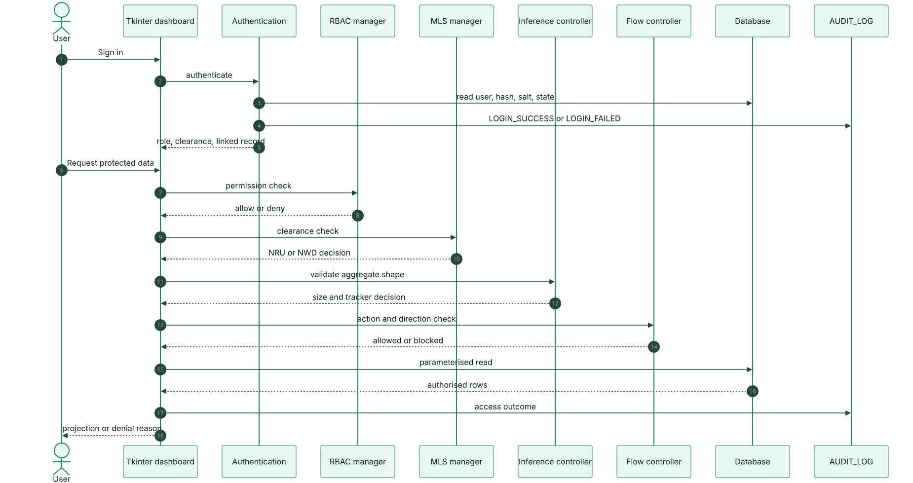
A denied request should not reach data access, and the denial reason should remain understandable to the user.
RBAC answers “may this role act?”, MLS answers “at which level?”, and flow answers “where may the result go?”
Allowed operations and denials are both evidence. Review needs the attempted action, not only successful writes.
The login flow loads account state, verifies the stored password representation, tracks failed attempts, and creates a session before the role router selects a dashboard. Generic denial messages avoid confirming whether a username exists. The published classroom credentials and simulated second factor remain demo constraints, not production identity design.
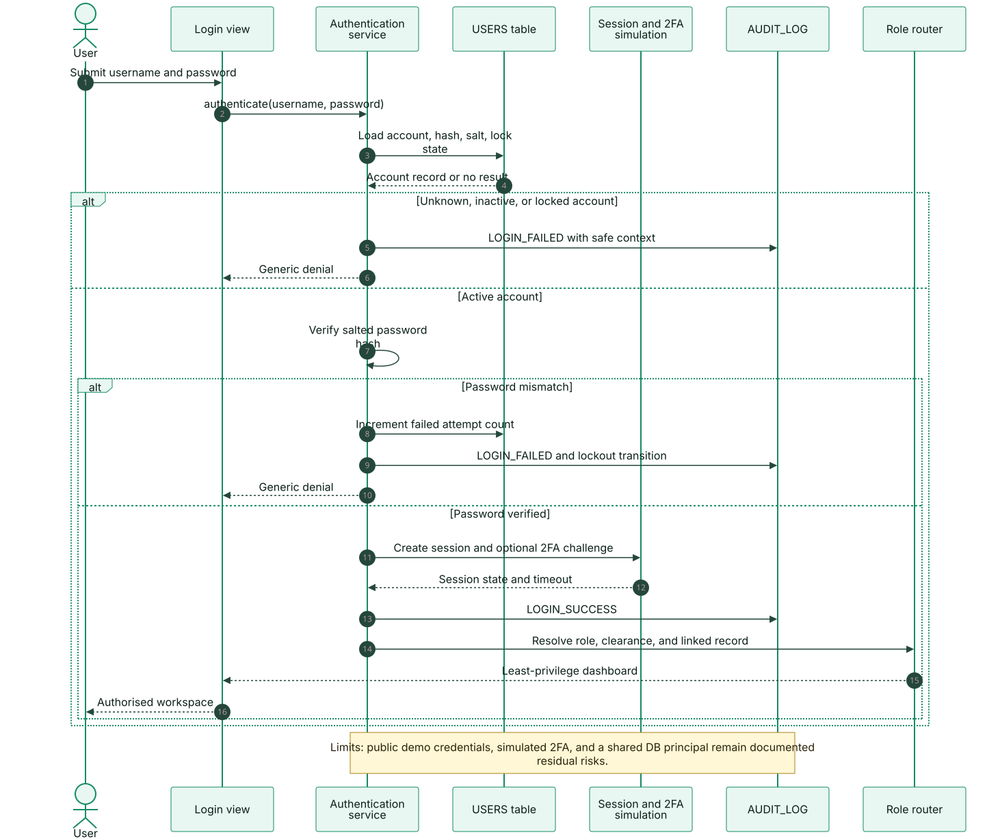
Inactive and locked accounts must not reach password verification or dashboard routing.
Failed attempts, lockout transitions, and successful logins belong in the audit trail.
A valid session still depends on role, clearance, ownership, assignment, and action checks.
Audit is cross-cutting. Authentication results, protected reads, writes, exports, and role-request decisions all produce context about the actor, target, action, outcome, and time. The admin view turns those rows into an investigation surface. The table is mutable, so the audit trail is detective evidence rather than tamper-proof proof.
A blocked action is security-relevant even when no data changed.
Passwords, keys, and unnecessary personal data must be excluded or redacted before persistence.
Append-only storage, retention, integrity checks, and restricted review are roadmap work.
Role permission, clearance, aggregate disclosure, data movement, and encryption are deliberately separate. Collapsing them into one check would hide which policy actually failed.
The matrix grants operations to roles, but the decision path also considers explicit denials, own-row operations, and public projections. An Instructor can read assigned students; a Student can read only their own published grades; the TA role is denied grade access even where attendance duties overlap.
TA grade denial is intentional and should not be relaxed for convenience.
The same Student role sees only the linked student record, not all Student rows.
Instructor and TA views depend on course assignment, not only on table permission.
Clearance and classification are ordered from Public to Top Secret. No Read Up prevents lower-clearance subjects from reading higher objects. No Write Down prevents a subject from moving higher-classification data into a lower level. The TA attendance case is the documented conflict: attendance is Secret while the TA clearance is Confidential, so delegated views express the duty rather than pretending the pure lattice allows it.
A lower clearance must not receive higher-classification data, regardless of role convenience.
Readable higher-level data must not be copied into a lower-classification object.
Admin write and TA attendance handling are named design decisions, not invisible bypasses.
Small result sets, MIN/MAX extremes, and complementary queries can disclose a value that no single query returned. SRMS applies a minimum result-set size of three, a stricter minimum of six for MIN/MAX, and tracker history for query pairs that differ by one record. The tracker is a process-local heuristic, not a proof of intent or a complete statistical-disclosure control.
An empty aggregate returns no individual value and is allowed by the size rule.
One or two rows fail the minimum size of three before aggregation is returned.
Tracker results are not shared across processes or mirrored in SQL Server.
Flow control asks where a result may go after it is read. Upward and same-level movement is permitted; downflow is blocked. The action policy then restricts export, print, copy, save, and screenshot at different levels. These checks reduce accidental disclosure, but the client cannot prevent every out-of-band capture.
Reading data does not grant unlimited movement; the target level determines whether the flow is allowed.
Export, print, copy, save, and screenshot are separate operations with different thresholds.
A screenshot tool outside the application can bypass in-app action blocks.
SQL Server protects selected columns through a database master key, certificate, and AES-256 symmetric key. The application layer uses PBKDF2-HMAC-SHA256 to derive a Fernet key, and Fernet provides authenticated encryption. Password storage differs by path: bcrypt on the SQLite/model path and SHA-256 with per-user salt in the SQL Server seed path. The two key lifecycles are not unified.
The standard construction uses AES-128-CBC with HMAC-SHA256; “AES-256” describes the SQL Server key, not Fernet.
Set SRMS_MASTER_KEY for any local data that matters. Never protect real records with the demo fallback.
Key rotation, envelope encryption, and a single lifecycle are roadmap items, not current features.
The data model and role-request workflow show how records connect and how privilege changes are requested, reviewed, and recorded.
The ERD links users to optional student or instructor records, courses to assignments and enrollments, and students to grades and attendance. Audit rows record acting users. The model keeps identity, academic records, workflow, and evidence separate enough to review each boundary.
USERS carries authentication state, role, clearance, and an optional link to a student or instructor record.
Course assignment and enrollment tables explain how row-level access is narrowed beyond the role matrix.
AUDIT_LOG references acting users, but it remains mutable and outside an append-only guarantee.
A student or TA submits a role request with a reason. The model validates the transition and records a Pending request. An admin reviews the context, approves or denies with comments, and updates the user role and clearance when approved. The final decision is audited, and the requester can refresh to see the outcome.
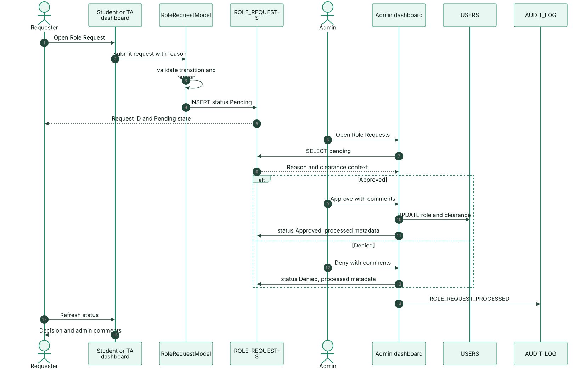
Submission creates a workflow record; it does not change the role by itself.
Approval is a security decision with a reason, an actor, and a resulting audit event.
Rejected transitions and reviewer comments remain part of the record.
The final group connects the local topology to its threats and recovery path. This is where the project states its limits most directly.
The threat model separates untrusted users, the application boundary, and the database boundary. Credential reuse, role overreach, aggregate inference, downflow, shared database credentials, and backup exposure each map to a mitigation or an explicit residual risk. The diagram is a review aid; the full register belongs in the threat-model guide.
SQL Server roles cannot provide per-user isolation while every request uses one privileged login.
Classroom reproducibility intentionally conflicts with credential secrecy; rotate before any real deployment.
The SQL backup contains security objects and demo data; treat it as a protected artefact.
The Tkinter client and the read-only Flask viewer connect to SQL Server in Docker. DBeaver is optional for inspection, and the static documentation site is published separately through GitHub Pages. Default endpoints stay on loopback; the published website contains no application data.
SQL Server and the Flask viewer are intended for local review, not public exposure.
It is an inspection aid, separate from the desktop role dashboards and their checks.
The website explains the system; it does not execute the Tkinter application or query the database.
The repository ships a SQL Server backup and a SQLite fallback. A local restore copies the backup into the container, discovers logical file names, restores with REPLACE and explicit MOVE clauses, then verifies schema objects and demo rows. The backup contains published classroom credentials and security objects, so it must never be treated as anonymous sample data.
Confirm the target database before restoring; the option overwrites it rather than merging.
Check tables, views, roles, procedures, and expected demo inventory instead of assuming success.
Capture restore time, operator, source checksum, and result for operational evidence.
Open the editable Mermaid sources, compare them with the security models guide, then run the documented test matrix against the implementation.